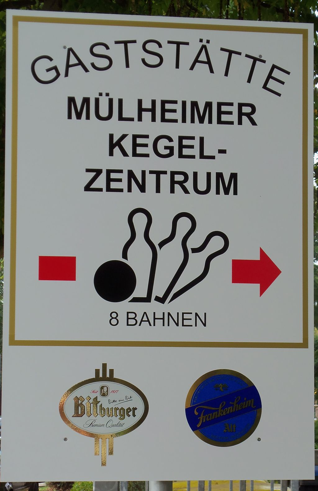
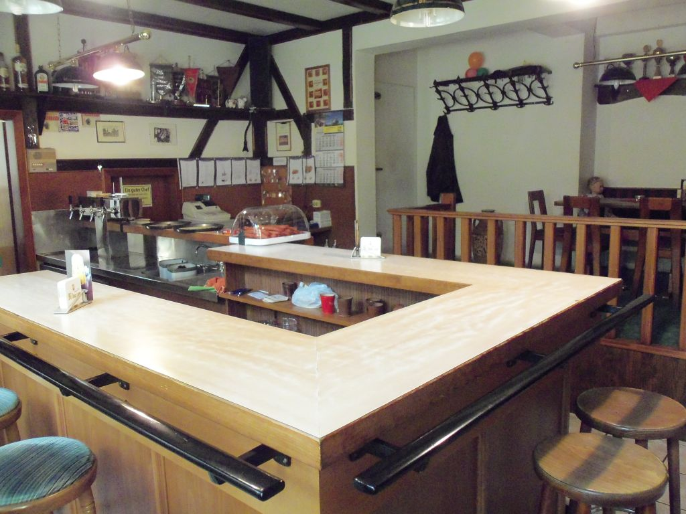
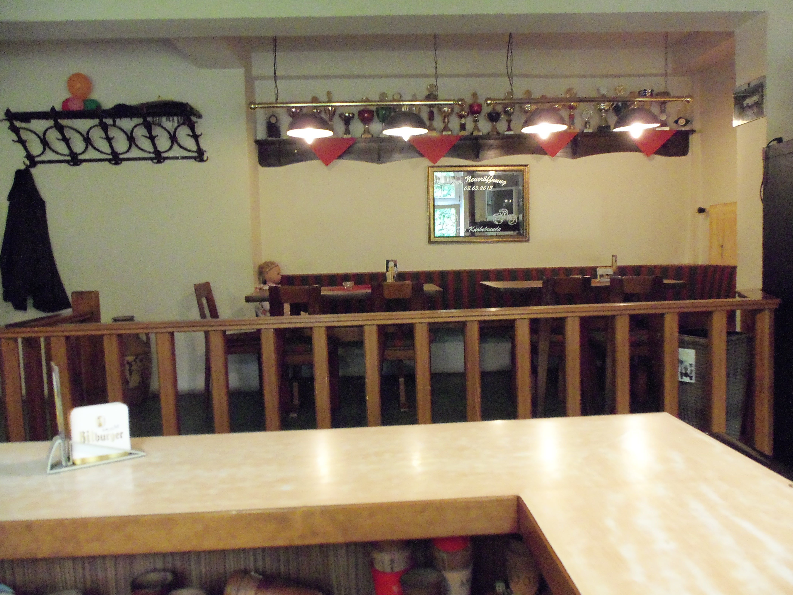
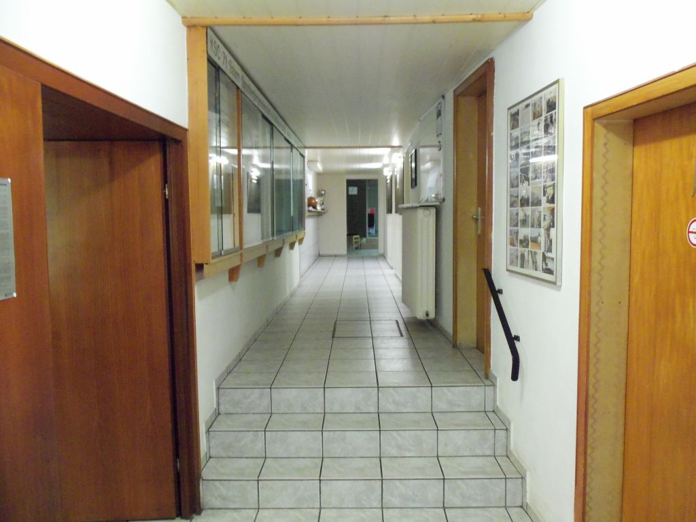
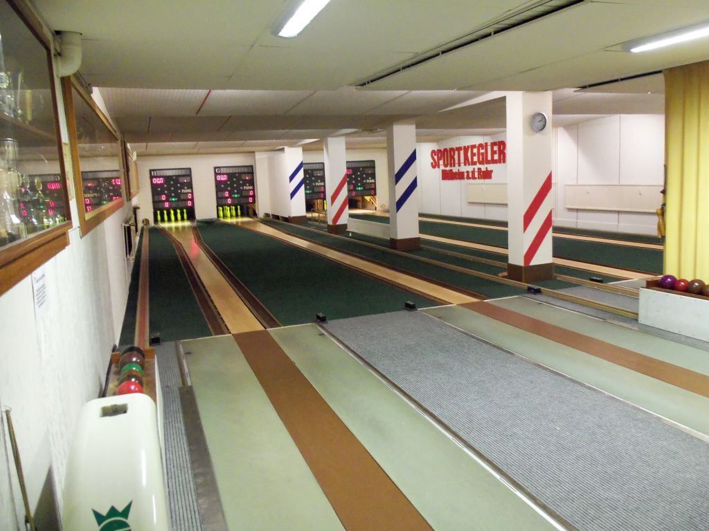
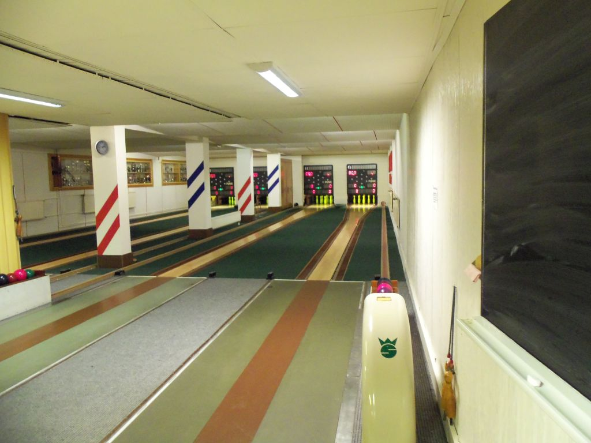
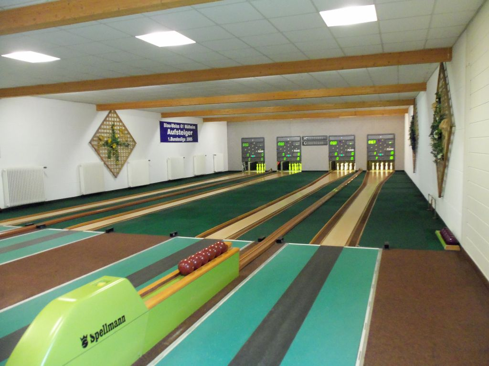
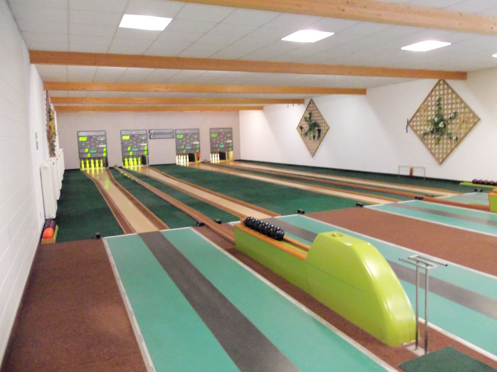
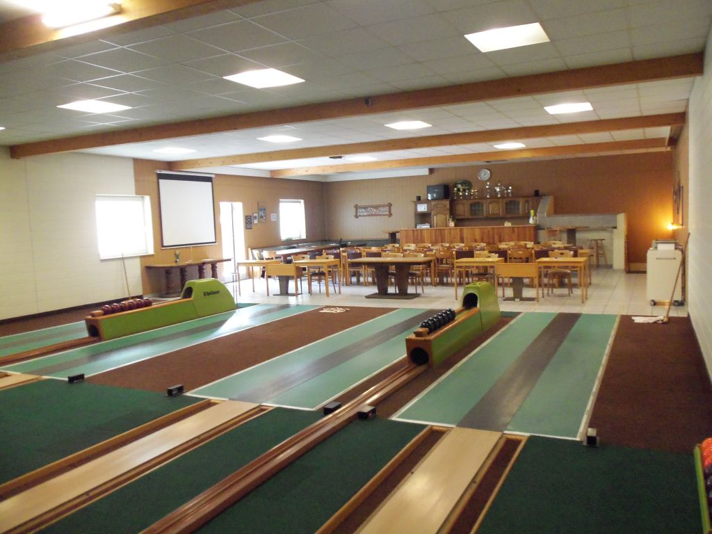

Es sind wieder Termine fur Freizeit-Kegelclubs frei geworden.
Gekegelt werden kann auf einer der 4 Kegelbahnen im Untergeschoss,
auf gepflegten Sportkegelbahnen aus Holzpakett.
Ort: Mülheim-Styrum / Moritzstr. 45a
Bitte wendet euch zwecks Terminabsprache an unseren Gastwirt:
Almir Tabaku (sagt einfach Mirco zu ihm )
Tel.: 0208/402381 oder 0176/24609805
Er wird euch auch mit Speisen und Getränke versorgen.
siehe hierzu die -->> Speise und Getränkekarte. <--
| Sportbereich Untergeschoss |
|
   |
|
   |
Die Kegelhalle ist gut erreichbar mit :
Bus (Linie 122 bis Hauskampstr.) + Fußweg 5 Min
Bus (Linie 129 bis Hauskampstr.) + Fußweg 5 Min
Straßenbahn (Linie 110 bis Friesenstr.) + Fußweg 5 Min
S-Bahn ( S1 u. S2 bis Bf Mh-Styrum) + Fußweg 8 Min)
oder mit dem Auto bis Parkplatz Sportplatz Moritzstr.+ Fußweg 2 Min
Parkplatz ist auch gegenüber genügend vorhanden
siehe Straßenkarte
Wir freuen uns auf euren Besuch und wünschen euch Gut Holz !
Sportkegler gesucht !   
Ort: Mülheim-Styrum / Moritzstr. 45a
Die Damen > Rot-Weiß 59 Mülheim <
und die > Herren < KSC 71 Saarn <
suchen sportbegeisteret Mitglieder zwischen 10 und 40 Jahren
Vorkenntnisse im Kegelsport sind nicht erforderlch.
Kosten für passive Mitglieder pro Monat 10€
Sportbereich im Obergeschoss
Kontakt (Henry Hentschel) 0201/8695103